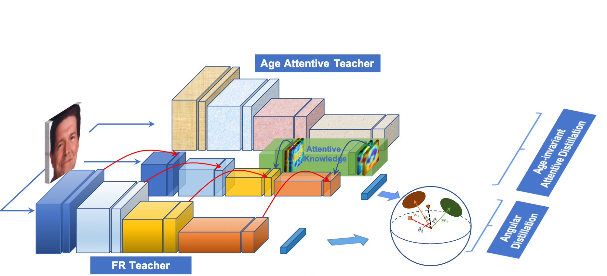
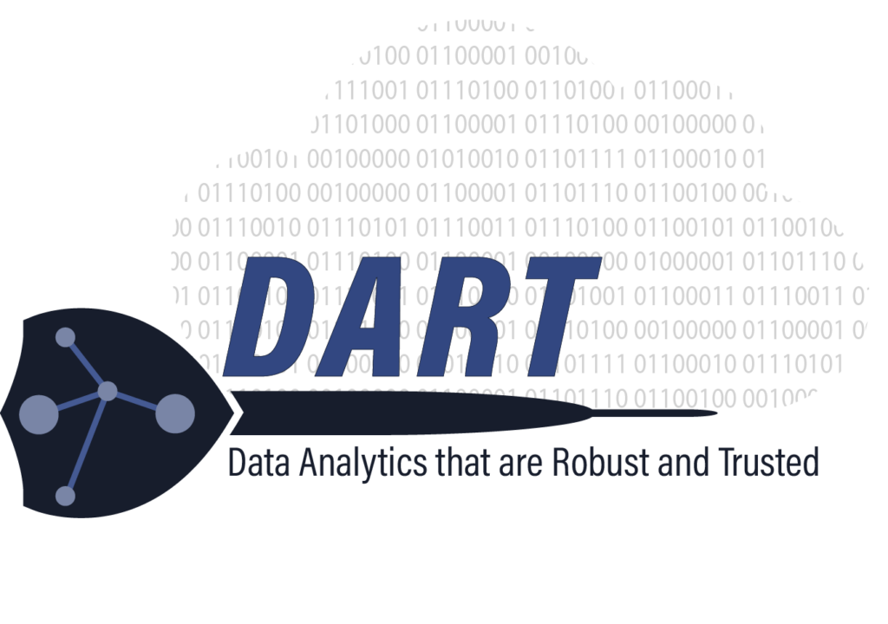

Our Solution
Our CVIU Lab focuses on three major technologies of biometric privacy detection:1. Open-set Large Scale Biometric Recognition. We aim to build the robust in-the-wild recognition models for biometic data, e.g., face recognition, etc.
2. Biometric Privacy Protection. We aim to build the approach that can identify the vulnerable of deep learning model and protect the biometric data.
3. Face Aging Technology.We aim to build an AI model that can synthesize faces at any age so that it helps to enhance the robustness of the face recognition model.
|  |

|
Our Team

|

|
|
| Dr. Khoa Luu | Thanh Dat Truong | Xuan Bac Nguyen |
| Assistant Professor | Ph.D. Candidate | Ph.D. Student |
| khoaluu@uark.edu | tt032@uark.edu | xnguyen@uark.edu |
Publication
[1] Thanh-Dat Truong, Chi Nhan Duong, Kha Gia Quach, Ngan Le, Tien D Bui, and Khoa Luu (2023). LIAAD: Lightweight Attentive Angular Distillation for Large-scale Age-Invariant Face Recognition. Neurocomputing, 2023.
[2] Thanh-Dat Truong, Chi Nhan Duong, Ngan Le, Marios Savvides, and Khoa Luu (2022). Vec2Face-v2: Unveil Human Faces from their Blackbox Features via Attention-based Network in Face Recognition. arXiv, 2022.
[3] Xuan Bac Nguyen, Duc Toan Bui, Chi Nhan Duong, Tien D Bui, and Khoa Luu (2021). Clusformer: A Transformer based Clustering Approach to Unsupervised Large-scale Face and Visual Landmark Recognition. IEEE/CVF Conference on Computer Vision and Pattern Recognition (CVPR), 2021.
[4] Thanh-Dat Truong, Chi Nhan Duong, Minh-Triet Tran, Ngan Le, and Khoa Luu (2021). Fast Flow Reconstruction via Robust Invertible n×n Convolution. Future Internet, 2021.
[5] Chi Nhan Duong, Thanh-Dat Truong, Khoa Luu, Kha Gia Quach, Hung Bui, and Kaushik Roy (2020). Vec2Face: Unveil Human Faces from their Blackbox Features in Face Recognition. Proceedings of the IEEE/CVF Conference on Computer Vision and Pattern Recognition (CVPR), 2020.
[6] Chi Nhan Duong, Khoa Luu, Kha Gia Quach, Nghia Nguyen, Eric Patterson, Tien D. Bui, and Ngan Le (2019). Automatic Face Aging in Videos via Deep Reinforcement Learning. Proceedings of the IEEE/CVF Conference on Computer Vision and Pattern Recognition (CVPR), 2019.
Sponsors
|  |